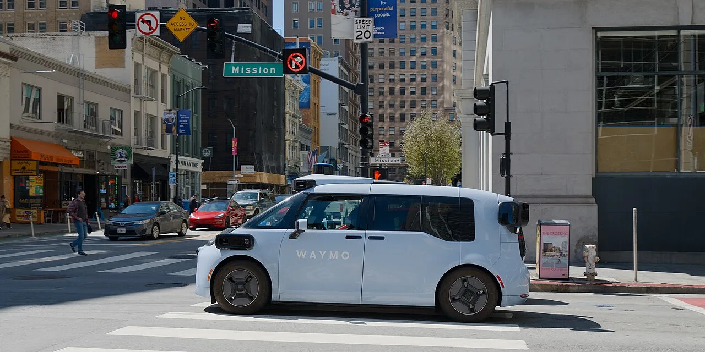

▲ 웨이모가 런던에 이어 뮌헨을 두 번째 유럽 도시로 지목했다 ⓒ Wikimedia Commons
웨이모는 오랫동안 미국 안에서만 움직였습니다. 도시를 하나씩 늘리는 방식이었습니다.
이번에는 대륙을 건넜습니다. 런던에 이어 독일 뮌헨이 두 번째 유럽 도시로 지목됐습니다.
1. 왜 뮌헨인가
공동 CEO 테케드라 마와카나는 뮌헨 선택의 이유를 이렇게 밝혔습니다. "뮌헨은 모빌리티와 엔지니어링의 세계적 중심지이고, 이 도시의 일부가 되는 것은 글로벌 확장에서 중요한 이정표"라는 설명입니다.
📍 뮌헨이라는 선택의 무게
뮌헨은 BMW 본사가 있는 도시이자 독일 자동차 산업의 한 축입니다. 부품·소프트웨어 인력 풀도 두껍습니다.
동시에 유럽에서 자율주행 규제가 비교적 정리된 국가이기도 합니다. 독일은 2021년 7월 자율주행법을 시행해 레벨 4 무인 차량의 공도 운행을 허용했습니다. 다만 사전 승인된 운행 구역에서만 가능하고, 원격으로 개입할 수 있는 기술 감독자를 두어야 합니다.

▲ 유럽 진출은 도시별 규제 승인이 전제 조건이다 ⓒ Wikimedia Commons
2. 바로 무인으로 다니는 것은 아닙니다
상용 서비스 전에 준비 단계가 있습니다. 웨이모는 훈련된 자율주행 전문 인력을 투입해 직접 차를 몰게 합니다.
이 과정에서 뮌헨의 도로 지도와 교통 환경 데이터를 수집합니다. 자율주행이 그 도시를 이해하기 전까지는 사람이 먼저 다닙니다.
✅ 상용화까지의 단계
· 전문 인력이 수동 운전하며 데이터 수집
· 뮌헨 고유의 도로 지도·교통 환경 학습
· 도로 주행 테스트와 기술 검증
· 현지 규제 승인 절차
· 상용 서비스 개시 — 2027년 말 목표
3. 지금까지의 웨이모
현재 웨이모는 미국 샌프란시스코, 로스앤젤레스, 피닉스, 오스틴에서 로보택시를 운행하고 있으며 서비스 지역을 계속 넓히고 있습니다.
| 구분 | 도시 |
|---|---|
| 미국 운행 중 | 샌프란시스코 · 로스앤젤레스 · 피닉스 · 오스틴 |
| 유럽 예고 | 런던 · 뮌헨(2027년 말) |
런던에 뮌헨이 더해지면서 유럽 사업은 단일 도시가 아닌 다도시 모델로 바뀝니다. 미국 중심이던 사업 구조에서 상당한 변화입니다.

▲ 미국에서는 네 개 도시에서 운행 중이다 ⓒ Wikimedia Commons
4. 유럽이 더 어려운 이유
미국에서 통한 방식이 유럽에서 그대로 통하지는 않습니다.
✅ 유럽 도시의 난이도
· 좁고 불규칙한 도로 — 오래된 도심 구조
· 자전거·보행자 통행 비중이 훨씬 높다
· 나라마다 다른 교통 규칙과 표지
· 개인정보 보호 규제(GDPR)가 데이터 수집에 제약
· 겨울철 눈·안개 등 센서 악조건
📍 그래서 데이터 수집 기간이 깁니다
2027년 말이라는 목표는 지금부터 1년 이상의 준비 기간을 잡은 것입니다. 미국 도시 진입 때보다 여유 있는 일정입니다.
웨이모도 서비스 개시 시점은 유동적이라고 밝혔습니다. 규제 승인 절차가 남아 있기 때문입니다.
5. 국내와의 거리
국내에서도 자율주행 택시 논의가 진행 중이지만, 웨이모의 한국 진출 계획은 이번 발표에 포함되지 않았습니다.
다만 웨이모가 유럽에서 어떤 규제 절차를 밟는지는 참고할 만합니다. 미국식 규제 환경이 아닌 곳에서 로보택시가 어떻게 승인받는지를 보여주는 첫 사례가 되기 때문입니다.

▲ 운전석이 비어 있는 상태로 승인받는 절차가 관건이다 ⓒ Wikimedia Commons
정리
웨이모가 2027년 말 독일 뮌헨에서 자율주행 택시 서비스를 시작하겠다고 예고했습니다. 런던에 이은 두 번째 유럽 도시이며, 북미를 벗어난 첫 본격 확장입니다.
상용화 전에는 훈련된 전문 인력이 직접 운전하며 뮌헨의 도로 지도와 교통 환경 데이터를 수집합니다. 이후 도로 테스트, 기술 검증, 현지 규제 승인을 거칩니다.
현재 미국에서는 샌프란시스코·로스앤젤레스·피닉스·오스틴 네 도시에서 운행 중입니다. 유럽은 좁은 도심 구조와 GDPR 등 미국과 다른 조건이 많아, 서비스 시점은 유동적이라고 밝혔습니다.